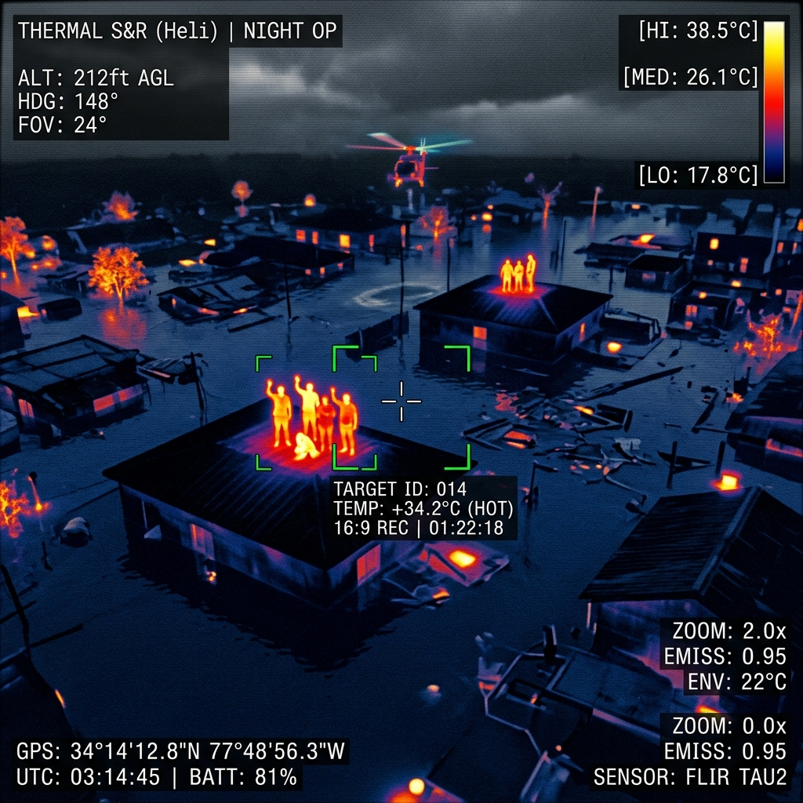
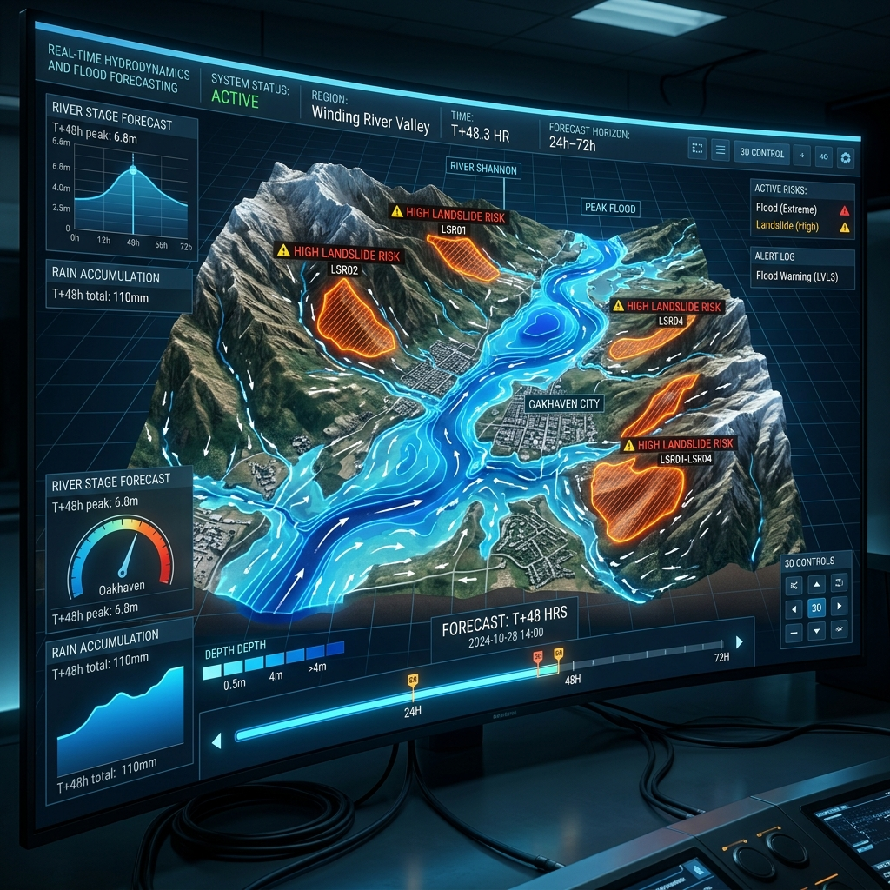

UAV Dự Đoán & Khắc Phục
Hậu Quả Lũ Lụt
Thu thập dữ liệu RGB, Radiometric Thermal và LiDAR xuyên mây để mô phỏng ngập lụt 3D, hỗ trợ tìm kiếm cứu nạn khẩn cấp và đánh giá thiệt hại tự động theo chuẩn d-MRV quốc tế.
Thách Thức Trong Tác Chiếm Ứng Phó Thiên Tai & Lũ Lụt
Phương pháp truyền thống thất bại trước sự chia cắt địa hình và mây mù thời tiết khắc nghiệt.
Khó quan sát & Đánh giá toàn cảnh
Địa hình bị chia cắt, đường giao thông ngập sâu, mây mù che khuất vệ tinh 100% khiến lực lượng mặt đất không nắm bắt được quy mô thảm họa thực tế.
Rủi ro sinh mạng lực lượng cứu hộ
Khó phát hiện nạn nhân trong đêm tối, sương mù, bị kẹt dưới tán cây/đống đổ nát; tìm kiếm cứu hộ mù quáng gây nguy hiểm cho First Responders.
Thiếu dữ liệu địa hình đo lường thiệt hại
Không thể đo lường chính xác độ sâu mực nước, khối lượng sạt lở, và tình trạng cơ sở hạ tầng bằng các phương pháp thủ công truyền thống.
Điều phối sơ tán chậm trễ
Thiếu bản đồ rủi ro thực tế thời gian thực, không thể đưa ra phương án sơ tán tối ưu và kịp thời trước khi mực nước lũ dâng cao.
Nút Thắt Cần Giải Quyết Ngay
"Ứng phó thụ động làm gia tăng đến 40% thiệt hại về người và tài sản trong các đợt bão lũ. Dịch vụ UAV S0296 giải quyết triệt để nút thắt dữ liệu thời gian thực và mô phỏng ngập lụt chủ động."
Hệ Thống UAV Dã Chiến & AI Mô Phỏng Thủy Văn 3D
GASCOLAE cung cấp giải pháp UAV toàn diện tích hợp cảm biến đa dạng (RGB, Radiometric Thermal, LiDAR) hoạt động xuyên mây mù. Tự động chuyển hóa dữ liệu dã chiến thành bản đồ 3D Digital Twin, truyền tọa độ cứu nạn real-time và lập báo cáo bồi thường bảo hiểm & d-MRV Carbon.
Công Nghệ Cốt Lõi Chi Tiết
LiDAR & Định Vị Siêu Cao RTK
Đã kiểm chứngQuét mây điểm 3D xuyên qua tán cây và thời tiết mây mù mùa bão lũ, kết hợp định vị RTK đảm bảo sai số vị trí < 5cm.
- Tạo mô hình độ cao số DEM/DTM siêu chính xác.
- Xây dựng bản đồ độ sâu mực nước ngập lụt.
- Tính toán khối lượng sạt lở đất đá tự động.
Camera Bức Xạ Nhiệt Radiometric Thermal
Đã kiểm chứngCảm biến bức xạ nhiệt định vị thân nhiệt con người và động vật trong điều kiện đêm tối, sương mù, bị che phủ bởi cây cối/đổ nát.
- Nhận diện điểm nhiệt (Hotspot) nạn nhân tự động.
- Tác chiến cứu nạn 24/7 xuyên đêm mưa bão.
- Định vị nguồn chập cháy điện, nguy cơ rò rỉ nhiệt.
AI Digital Twin & Mô Phỏng Thủy Văn
[CẦN XÁC MINH]Nạp bản đồ 3D vào siêu máy tính AI để chạy mô hình thủy văn, dự báo kịch bản ngập lụt chi tiết trong 24–72 giờ tới.
- Mô phỏng kịch bản xả lũ và dâng nước bão.
- Phân luồng sơ tán tối ưu theo độ sâu ngập.
- Cảnh báo vùng nguy cơ sạt lở sớm.
Edge Computing Dã Chiến Tại Chỗ
Đã kiểm chứngTrạm xử lý dữ liệu tại chỗ giúp dựng bản đồ và phân tích AI tức thì mà không phụ thuộc hạ tầng mạng Internet vùng lũ bị sự cố.
- Livestream hình ảnh/nhiệt không độ trễ.
- Xử lý mây điểm LiDAR dã chiến tại chỗ.
- Xuất tọa độ cứu hộ trực tiếp cho trạm chỉ huy.
Tối Ưu Cứu Hộ Khẩn Cấp
Truyền livestream và camera nhiệt real-time giúp chủ động điều hướng, phát hiện định vị nạn nhân an toàn.
Rút Ngắn Thời Gian Đánh Giá
Cung cấp bản đồ phân vùng thiệt hại độ phân giải cao giúp ngành bảo hiểm duyệt bồi thường nhanh chóng.
Cảnh Báo Ngập Chủ Động
Lập kịch bản ngập lụt 3D giúp chính quyền chủ động sơ tán, phân luồng giao thông và gia cố đê điều trước lũ.
Chuẩn Hóa d-MRV Quốc Tế
Dữ liệu viễn thám kết hợp đo mẫu mặt đất tuân thủ tiêu chuẩn Verra VM0042/VT0005 về phát thải Carbon.
5 Năng Lực Công Nghệ Dã Chiến Vượt Trội
Tối ưu hóa khả năng thu thập và phân tích dữ liệu trong mọi điều kiện thiên tai khắc nghiệt nhất.
Hoạt Động Xuyên Mây & Dã Chiến
Thu thập dữ liệu dã chiến linh hoạt dưới tầng mây, không bị hạn chế bởi mây mù mưa bão như các hệ thống ảnh vệ tinh.

Radiometric Thermal Camera
Nhận diện bức xạ nhiệt cơ thể người, hỗ trợ tác chiến tìm kiếm cứu nạn trong đêm tối, sương mù và bị che phủ.
LiDAR & Định Vị RTK < 5cm
Quét mây điểm 3D xuyên tán cây, kết hợp định vị chuẩn RTK tạo mô hình độ cao DEM/DTM chính xác cao.
Trạm Xử Lý AI Edge Computing
Xử lý dữ liệu ngay tại hiện trường dã chiến, tránh rủi ro gián đoạn khi nghẽn mạng băng thông vùng lũ.

AI Digital Twin & Mô Phỏng Kịch Bản Thủy Văn (24–72h)
Nạp bản đồ địa hình 3D vào hệ thống AI để chạy mô hình mô phỏng dòng chảy ngập lụt, dự báo các vị trí nguy cơ sạt lở và phân vùng ngập úng chủ động trước 24 đến 72 giờ. Giúp ban chỉ huy ứng phó thiên tai đưa ra quyết định sơ tán và điều phối nguồn lực chính xác.
5 Bước Thi Công Dã Chiến Chuẩn SOP
Quy trình chuẩn hóa từ khâu tiếp nhận thông tin khẩn cấp đến bàn giao dữ liệu GIS có giá trị pháp lý.
Xác Nhận Scope & Ranh Giới Khảo Sát
Tiếp nhận tọa độ ranh giới vùng cần khảo sát từ ban chỉ huy thiên tai và chốt mục tiêu kỹ thuật dịch vụ.
SOP Phase 1Chuẩn Bị & Xin Cấp Phép Bay Khẩn Cấp
Phối hợp xin cấp phép bay ưu tiên khẩn cấp (Cục Tác chiến - BTTM) tuân thủ Nghị định 36/2008/NĐ-CP và kiểm tra an toàn HSE.
Pháp lý NĐ 36/2008Bay Thu Thập Dữ Liệu Dã Chiến
Thiết lập trạm mặt đất, kiểm tra thời tiết (gió < 10-12m/s) và cất cánh triển khai các luồng bay quét RGB/Thermal/LiDAR.
Tác chiến dã chiếnXử Lý AI Edge & Mô Phỏng Thủy Văn
Đồng bộ dữ liệu dã chiến về trạm Edge Computing, bóc tách tọa độ nhiệt Hotspots và chạy kịch bản ngập 3D.
AI Edge ProcessingQA/QC, Kiểm Định d-MRV & Bàn Giao
Kiểm định chất lượng dữ liệu, hiệu chỉnh mẫu thực địa (d-MRV Carbon) và xuất báo cáo GIS chuẩn (.GeoTIFF, .LAS, .PDF).
Bàn giao GIS & VerraCác Gói Triển Khai Linh Hoạt (Service Levels)
Lựa chọn cấp độ phù hợp với nhu cầu từ giám sát ban ngày đến tác chiến cứu nạn khẩn cấp & d-MRV.
Visual RGB Only
Lập bản đồ nhanh & Giám sát trực quan ban ngày
- UAV Camera RGB độ phân giải cao
- Livestream hình ảnh hiện trường ban ngày
- Bản đồ 2D khoanh vùng ngập lụt cơ bản
- Camera nhiệt cứu hộ đêm khẩn cấp
- Mô hình thủy văn 3D & d-MRV Carbon
Thermal SAR + LiDAR
Tác chiến khẩn cấp, Tìm kiếm cứu nạn & Quét 3D địa hình
- UAV tích hợp RGB + Radiometric Thermal + LiDAR
- Tác chiến cứu hộ đêm & sương mù (SAR)
- Bóc tách tọa độ Hotspot nạn nhân thời gian thực
- Mô hình độ cao số (DEM/DTM) sai số < 5cm
- Báo cáo kiểm toán KNK chuẩn Verra
AI Digital Twin & d-MRV
Phân tích nâng cao, Mô phỏng 3D & Báo cáo Carbon
- Toàn bộ tính năng Level 1 & Level 2
- Bản sao số 3D Digital Twin ngập lụt
- Kịch bản dự báo ngập 24–72h bằng AI
- Báo cáo d-MRV Carbon Verra (VM0042/VT0005)
- Hồ sơ pháp lý chứng minh bồi thường bảo hiểm
4 Kết Quả Bàn Giao Chuẩn GIS & Kiểm Toán
Dữ liệu có độ tin cậy tuyệt đối, tích hợp trực tiếp vào hệ thống chỉ huy và hồ sơ pháp lý bồi thường.
Bản Đồ 3D & Kịch Bản Ngập
Mô hình độ cao số DEM/DTM và mây điểm LiDAR mô phỏng các kịch bản mực nước dâng.
Báo Cáo Bồi Thường Bảo Hiểm
Bản đồ chỉ số thực vật NDVI/NDRE xác định diện tích nông nghiệp suy thoái chi trả bồi thường.
Báo Cáo d-MRV Carbon Verra
Báo cáo kiểm kê suy thoái sinh khối rừng và nguy cơ phát thải KNK (CH4/CO2) do lũ lụt.
Livestream Tọa Độ Cứu Hộ SAR
Danh sách tọa độ Hotspots nạn nhân kết nối trực tiếp về trạm chỉ huy dã chiến real-time.
3 Ứng Dụng Thực Địa Điển Hình
Giải pháp đã được chứng minh hiệu quả trong các kịch bản thiên tai khẩn cấp.
Tìm Kiếm Cứu Nạn (SAR) & Định Vị Mất Tích
Bối cảnh: Lực lượng cứu hộ cần phát hiện vị trí nạn nhân mắc kẹt trong đêm tối, sương mù dày đặc hoặc mưa bão kéo dài.
Xác Minh Bồi Thường Bảo Hiểm Nông Nghiệp
Bối cảnh: Công ty bảo hiểm/ngân hàng cần dữ liệu minh bạch để duyệt chi trả bồi thường tổn thất tài sản và cây trồng sau lũ.
Mô Phỏng 3D & Cảnh Báo Ngập Lụt Sớm
Bối cảnh: Chính quyền địa phương cần diễn tập và chuẩn bị phương án sơ tán dân cư trước đợt xả lũ đập thủy điện/bão lớn.
Câu Hỏi Thường Gặp Về Dịch Vụ S0296
Thông tin phản hồi chính thức được trích xuất từ Knowledge Base dịch vụ.
Hầu hết UAV dã chiến chuyên dụng chịu được mưa nhẹ/vừa và tốc độ gió dưới 10–12m/s. Trong trường hợp bão cực lớn, kíp bay dã chiến sẽ chờ cửa sổ thời tiết safe-window để cất cánh an toàn. [Nguồn: Asset 09 - KB SRC-08]
Mùa lũ mây mù che khuất ảnh vệ tinh 100%, độ phân giải vệ tinh thấp và chu kỳ chụp chậm không phục vụ cứu hộ real-time được. UAV S0296 bay dưới tầng mây, cho độ phân giải centimet và livestream dữ liệu tức thì. [Nguồn: Asset 09 - KB SRC-01]
Có. Dữ liệu gắn tọa độ GPS/RTK chuẩn centimet, dấu vết thời gian (Timestamp) và ảnh đa phổ chứng minh hư hại thực tế, giúp hồ sơ bồi thường đạt độ minh bạch tuyệt đối trước đơn vị kiểm toán. [Nguồn: Asset 09 - KB SRC-10, SRC-11]
Hoạt động bay tuân thủ Nghị định 36/2008/NĐ-CP. GASCOLAE hỗ trợ thủ tục xin phép bay ưu tiên khẩn cấp qua Cục Tác chiến – Bộ Tổng Tham mưu để triển khai dã chiến trong thời gian ngắn nhất. [Nguồn: Asset 09 - KB SRC-05]
Dữ liệu viễn thám UAV kết hợp đo đạc sinh khối mẫu mặt đất của GASCOLAE tuân thủ chặt chẽ tiêu chuẩn Verra VM0042/VT0005 phục vụ kiểm toán tổn thất sinh khối và phát thải KNK. [Nguồn: Asset 09 - KB SRC-09]
Flood Mitigation AI Assistant
Đặt câu hỏi trực tiếp để nhận thông tin tư vấn tự động về dịch vụ UAV S0296.
Flood Mitigation AI Assistant
Sẵn sàng trực tuyến • S0296 AgentYêu Cầu Tư Vấn Khẩn Cấp Dịch Vụ S0296
Đội ngũ kỹ thuật dã chiến của GASCOLAE sẵn sàng phản hồi trong 15 phút.